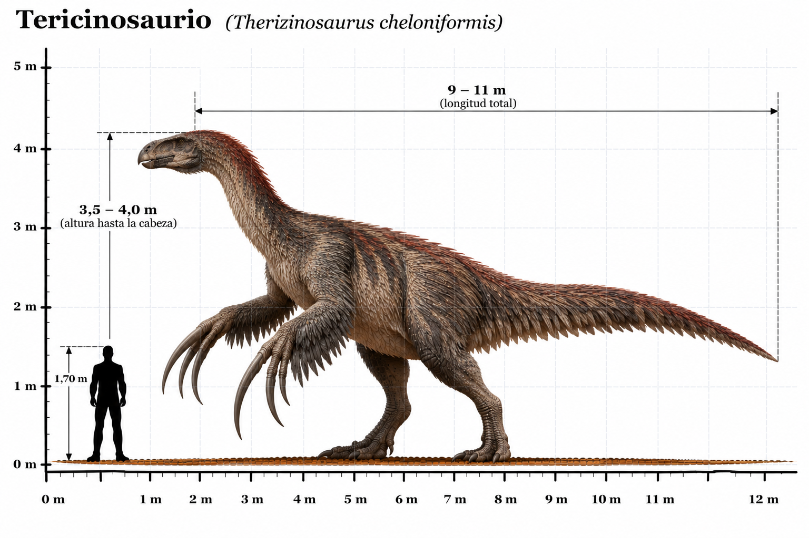

Therizinosaurus cheloniformis

El Therizinosaurus cheloniformis fue un enorme dinosaurio terópodo que habitó Asia durante el Cretácico tardío, hace aproximadamente entre 70 y 66 millones de años. Sus restos fósiles fueron descubiertos en Mongolia, en sedimentos de la formación Nemegt. Su nombre significa "lagarto guadaña", en referencia a sus extraordinarias garras, que se encuentran entre las más largas conocidas de cualquier animal terrestre. Estas garras podían alcanzar aproximadamente un metro de longitud siguiendo su curvatura, incluyendo su recubrimiento de queratina. A pesar de pertenecer al grupo de los terópodos, que incluye numerosos dinosaurios carnívoros, el Therizinosaurus probablemente era principalmente herbívoro. Poseía un cuello largo, una cabeza relativamente pequeña, un cuerpo voluminoso y unas extremidades delanteras muy desarrolladas. Sus enormes garras pudieron utilizarse para acercar ramas y vegetación hacia la boca, así como para exhibición o defensa. Se considera probable que tuviera un cuerpo parcialmente cubierto de plumas, ya que se han encontrado evidencias de plumaje en otros miembros de su grupo. Sin embargo, no se conoce con certeza el aspecto exacto de su recubrimiento corporal.
- Grupo: Terópodo (tericinosaurio).
- Familia: Therizinosauridae (tericinosáuridos).
- Período: Cretácico tardío (hace aproximadamente 70–66 millones de años).
- Alimentación: Principalmente herbívoro.
- Longitud: Aproximadamente 9–10 metros.
- Altura: Aproximadamente 4–5 metros hasta la cabeza.
- Localización: Asia (actual Mongolia).
